Table of contents |
Author: Johannes Buchner Homepage: http://astrost.at/istics/ Further information: Substructure of the AGN torusAbstract: The substructure of the nuclear obscurer of Active Galactic Nuclei 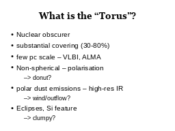 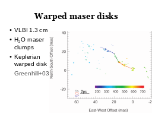 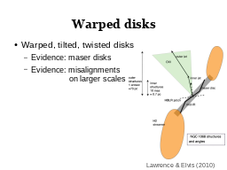

 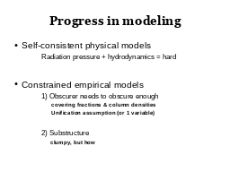
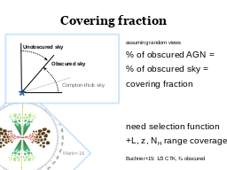
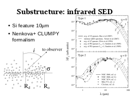
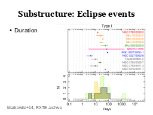
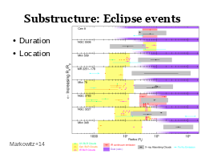
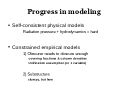
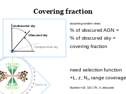
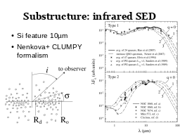
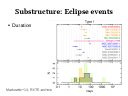
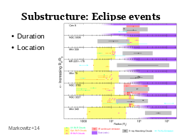

 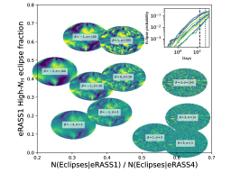
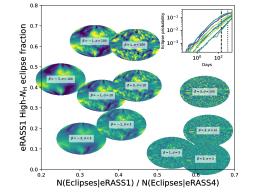
 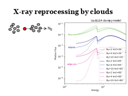
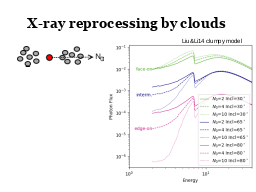
|